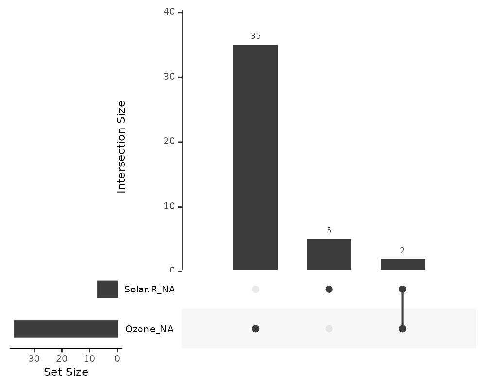
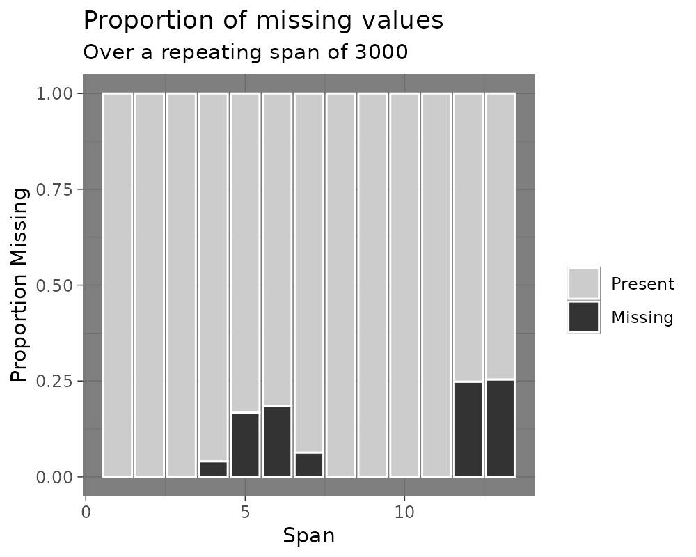

Gallery of Missing Data Visualisations
Nicholas Tierney
2024-03-07
Source:vignettes/naniar-visualisation.Rmd
naniar-visualisation.RmdThere are a variety of different plots to explore missing data
available in the naniar package. This vignette simply showcases all of
the visualisations. If you would like to know more about the philosophy
of the naniar package, you should read the vignette Getting
Started with naniar.
A key point to remember with the visualisation tools in
naniar is that there is a way to get the data from the plot
out from the visualisation.
Getting started
One of the first plots that I recommend you start with when you are
first exploring your missing data, is the vis_miss() plot,
which is re-exported from visdat.

This plot provides a specific visualiation of the amount of missing data, showing in black the location of missing values, and also providing information on the overall percentage of missing values overall (in the legend), and in each variable.
Exploring patterns with UpSetR
An upset plot from the UpSetR package can be used to
visualise the patterns of missingness, or rather the combinations of
missingness across cases. To see combinations of missingness and
intersections of missingness amongst variables, use the
gg_miss_upset function:
gg_miss_upset(airquality)
This tells us:
- Only Ozone and Solar.R have missing values
- Ozone has the most missing values
- There are 2 cases where both Solar.R and Ozone have missing values together
We can explore this with more complex data, such as riskfactors:
gg_miss_upset(riskfactors)
The default option of gg_miss_upset is taken from
UpSetR::upset - which is to use up to 5 sets and up to 40
interactions. Here, setting nsets = 5 means to look at 5
variables and their combinations. The number of combinations or rather
intersections is controlled by nintersects.
You could, for example look at all of the number of missing variables
using n_var_miss:
# how many missings?
n_var_miss(riskfactors)## [1] 24
gg_miss_upset(riskfactors, nsets = n_var_miss(riskfactors))
If there are 40 intersections, there will be up to 40 combinations of
variables explored. The number of sets and intersections can be changed
by passing arguments nsets = 10 to look at 10 sets of
variables, and nintersects = 50 to look at 50
intersections.
gg_miss_upset(riskfactors,
nsets = 10,
nintersects = 50)
Setting nintersects to NA it will plot all
sets and all intersections.
gg_miss_upset(riskfactors,
nsets = 10,
nintersects = NA)
Exploring Missingness Mechanisms
There are a few different ways to explore different missing data
mechanisms and relationships. One way incorporates the method of
shifting missing values so that they can be visualised on the same axes
as the regular values, and then colours the missing and not missing
points. This is implemented with geom_miss_point().
geom_miss_point
library(ggplot2)
# using regular geom_point()
ggplot(airquality,
aes(x = Ozone,
y = Solar.R)) +
geom_point()## Warning: Removed 42 rows containing missing values or values outside the scale range
## (`geom_point()`).
library(naniar)
# using geom_miss_point()
ggplot(airquality,
aes(x = Ozone,
y = Solar.R)) +
geom_miss_point()
# Facets!
ggplot(airquality,
aes(x = Ozone,
y = Solar.R)) +
geom_miss_point() +
facet_wrap(~Month)
# Themes
ggplot(airquality,
aes(x = Ozone,
y = Solar.R)) +
geom_miss_point() +
theme_dark()
General visual summaries of missing data
Here are some function that provide quick summaries of missingness in
your data, they all start with gg_miss_ - so that they are
easy to remember and tab-complete.
Missingness in variables with gg_miss_var
This plot shows the number of missing values in each variable in a
dataset. It is powered by the miss_var_summary()
function.
gg_miss_var(airquality)
library(ggplot2)
gg_miss_var(airquality) + labs(y = "Look at all the missing ones")
If you wish, you can also change whether to show the % of missing
instead with show_pct = TRUE.
gg_miss_var(airquality, show_pct = TRUE)You can also plot the number of missings in a variable grouped by
another variable using the facet argument.
gg_miss_var(airquality,
facet = Month)
Missingness in cases with gg_miss_case
This plot shows the number of missing values in each case. It is
powered by the miss_case_summary() function.
gg_miss_case(airquality)
gg_miss_case(airquality) + labs(x = "Number of Cases")
You can also order by the number of cases using
order_cases = TRUE
gg_miss_case(airquality, order_cases = TRUE)
You can also explore the missingness in cases over some variable
using facet = Month
gg_miss_case(airquality, facet = Month)
Missingness across factors with gg_miss_fct
This plot shows the number of missings in each column, broken down by
a categorical variable from the dataset. It is powered by a
dplyr::group_by statement followed by
miss_var_summary().
gg_miss_fct(x = riskfactors, fct = marital)
library(ggplot2)
gg_miss_fct(x = riskfactors, fct = marital) + labs(title = "NA in Risk Factors and Marital status")
##
## Attaching package: 'dplyr'## The following objects are masked from 'package:stats':
##
## filter, lag## The following objects are masked from 'package:base':
##
## intersect, setdiff, setequal, union
riskfactors %>%
group_by(marital) %>%
miss_var_summary()## # A tibble: 231 × 4
## # Groups: marital [7]
## marital variable n_miss pct_miss
## <fct> <chr> <int> <num>
## 1 Married smoke_stop 120 91.6
## 2 Married pregnant 117 89.3
## 3 Married smoke_last 84 64.1
## 4 Married smoke_days 73 55.7
## 5 Married drink_average 68 51.9
## 6 Married health_poor 67 51.1
## 7 Married drink_days 67 51.1
## 8 Married weight_lbs 6 4.58
## 9 Married bmi 6 4.58
## 10 Married diet_fruit 4 3.05
## # ℹ 221 more rowsgg_miss_fct can also be used to explore missingness
along time, like so:
gg_miss_fct(oceanbuoys, year)
# to load who data
library(tidyr)
gg_miss_fct(who, year)
(Thanks to Maria Paula Caldas for inspiration for this visualisation, discussed here)
Missingness along a repeating span with
gg_miss_span
This plot shows the number of missings in a given span, or breaksize,
for a single selected variable. In this case we look at the span of
hourly_counts from the pedestrian dataset. It is powered by
the miss_var_span function
# data method
miss_var_span(pedestrian, hourly_counts, span_every = 3000)## # A tibble: 13 × 6
## span_counter n_miss n_complete prop_miss prop_complete n_in_span
## <int> <int> <int> <dbl> <dbl> <int>
## 1 1 0 3000 0 1 3000
## 2 2 0 3000 0 1 3000
## 3 3 1 2999 0.000333 1.00 3000
## 4 4 121 2879 0.0403 0.960 3000
## 5 5 503 2497 0.168 0.832 3000
## 6 6 555 2445 0.185 0.815 3000
## 7 7 190 2810 0.0633 0.937 3000
## 8 8 0 3000 0 1 3000
## 9 9 1 2999 0.000333 1.00 3000
## 10 10 0 3000 0 1 3000
## 11 11 0 3000 0 1 3000
## 12 12 745 2255 0.248 0.752 3000
## 13 13 432 1268 0.254 0.746 1700
gg_miss_span(pedestrian, hourly_counts, span_every = 3000)
# works with the rest of ggplot
gg_miss_span(pedestrian, hourly_counts, span_every = 3000) + labs(x = "custom")
gg_miss_span(pedestrian, hourly_counts, span_every = 3000) + theme_dark()
You can also explore miss_var_span by group with the
facet argument.
gg_miss_span(pedestrian,
hourly_counts,
span_every = 3000,
facet = sensor_name)
gg_miss_case_cumsum
This plot shows the cumulative sum of missing values, reading the
rows of the dataset from the top to bottom. It is powered by the
miss_case_cumsum() function.
gg_miss_case_cumsum(airquality)
library(ggplot2)
gg_miss_case_cumsum(riskfactors, breaks = 50) + theme_bw()
gg_miss_var_cumsum
This plot shows the cumulative sum of missing values, reading columns
from the left to the right of your dataframe. It is powered by the
miss_var_cumsum() function.
gg_miss_var_cumsum(airquality)
gg_miss_which
This plot shows a set of rectangles that indicate whether there is a missing element in a column or not.
gg_miss_which(airquality)